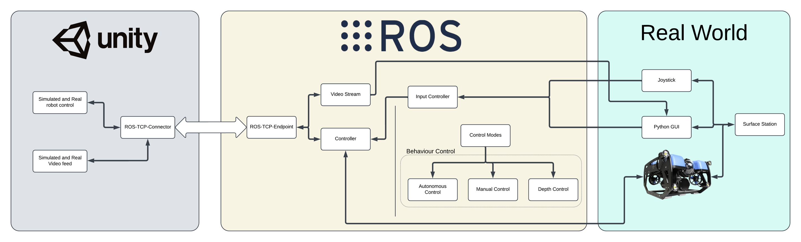
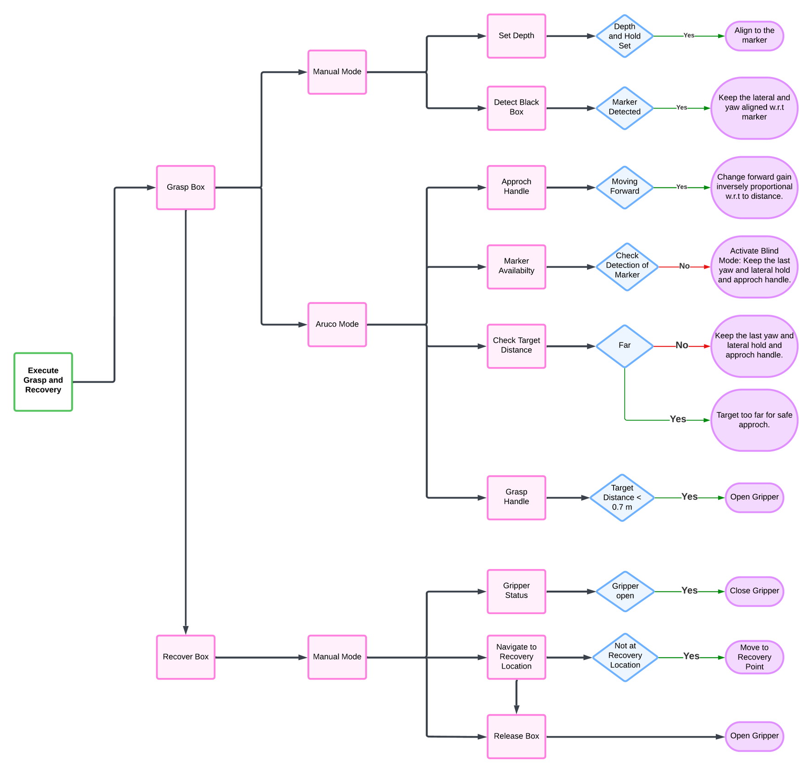
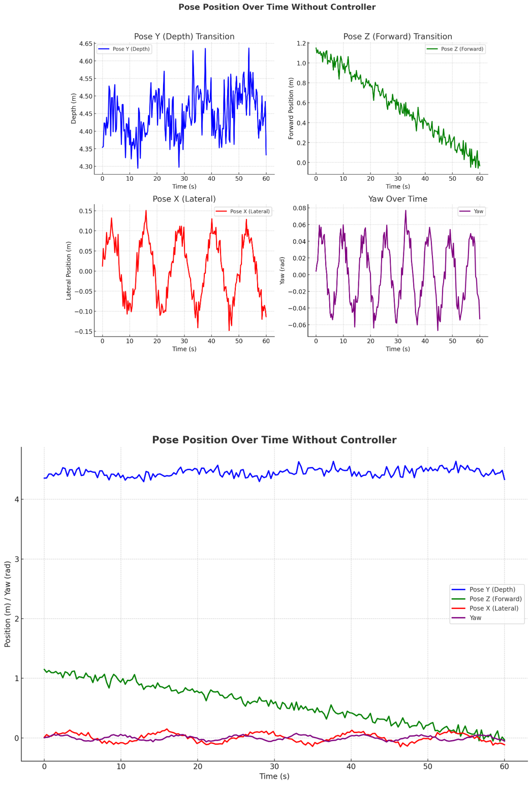
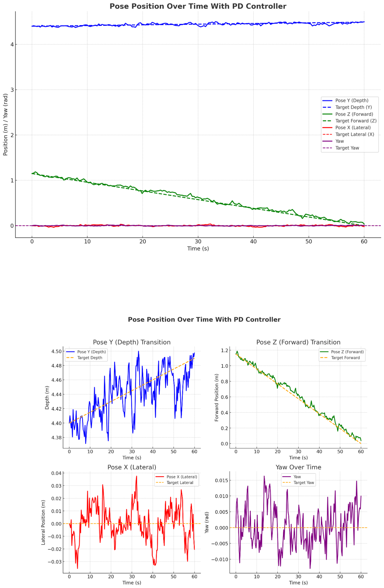

Underwater robotics · 2025
Autonomous Underwater Black-Box Retrieval
An end-to-end BlueROV2 system that detects an ArUco-marked target, aligns and approaches under closed-loop control, grasps it with a Newton Gripper, and coordinates recovery through a behavior tree.
- Role
- System design, perception, control and integration
- Collaborator
- Akshat Sinha
- Platforms
- BlueROV2 · Unity · ROS/ROS 2
- Validation
- Simulation and controlled-water testing
Overview
From visual detection to physical recovery
Underwater recovery is difficult because visibility, vehicle motion, currents, and manipulation uncertainty interact throughout the task. This project treats retrieval as one integrated autonomy problem rather than a set of disconnected demonstrations.
The pipeline uses an onboard camera and calibrated ArUco pose estimation to locate the target. A multi-axis PD controller regulates depth, lateral position, forward approach, and yaw. A behavior tree manages manual and autonomous modes, loss of visual contact, final blind approach, grasping, transport, and release.
Detect
Identify the marker and estimate target pose and distance.
Align
Regulate depth, lateral offset, forward motion, and yaw.
Grasp
Transition to close-range behavior and actuate the gripper.
Recover
Transport the secured target to a predefined recovery point.
System architecture
One interface for simulation and hardware

Perception
Compressed camera frames are converted to grayscale and processed with OpenCV ArUco detection. Calibrated camera intrinsics support marker pose estimation; pose, range, and annotated imagery are published as ROS topics.
Control
Thruster commands map marker-relative errors into forward, lateral, vertical, and yaw motion. Gains can be adjusted from the operator GUI while vehicle telemetry and processed imagery are monitored in real time.
Simulation
A Unity environment and the Blue simulator reproduce the UJI pool, target, camera feedback, and manipulator geometry, enabling repeatable testing before controlled-water deployment.
Decision autonomy
Behavior-tree task execution
The tree preserves operator control when needed while automating the repetitive and precision-sensitive phases. When the target is close or temporarily leaves the camera view, the system retains the last lateral and yaw references and enters a controlled blind approach. At less than 0.7 m, it initiates the grasp sequence before recovery.

Closed-loop control
Stability through tuned PD control
The uncontrolled response shows visible lateral and yaw oscillation. With tuned PD gains, the vehicle follows forward and depth references more closely while keeping lateral error and yaw near their targets. The plots below are presented as reported project evidence rather than a general performance guarantee.


Reported results
Controlled-condition performance
These results come from the project report’s simulation and controlled-water experiments. They should be interpreted within that scope: optimal or degraded lighting, approximately two metres initial range for timed recovery, and a mock target with a U-shaped handle.
Reported under optimal lighting and clear visibility.
Reported in low-light or noisy conditions.
Reported for real-world controlled tests.
Average from roughly two metres in controlled tests.
Current limitations
- ArUco-based perception depends on marker visibility, lighting, and camera calibration.
- Grasping remains sensitive to pose noise and final alignment.
- ROS 2 manipulator control requires further refinement for smoother joint motion.
- Testing does not yet establish performance in deep water, strong currents, or open-water visibility.
Next steps
- Fuse sonar or range sensing with vision for stronger localisation.
- Improve grasp planning and support a wider range of target geometries.
- Model stronger currents, turbidity, and hardware effects in simulation.
- Extend validation from controlled tanks to representative field environments.
Project resources